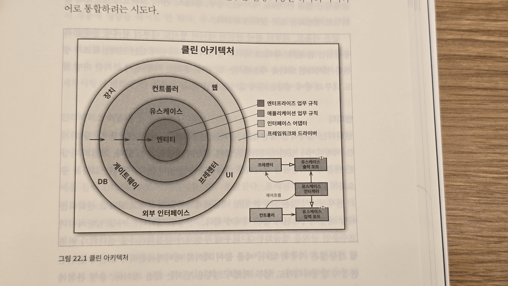

Clean Architecture 1
5. 아키텍쳐
- 아키텍쳐란?
- 책에서 정의하는 바로는 아키텍쳐는 잘 동작하는 시스템을 만들기 보다는 잘 운영할 수 있는 시스템을 만들기 위한다고 설명한다. 다시 말하면 좋은 아키텍쳐의 목표는 잘 동작하는 것 보다는 생산성을 최대화 하고 운영 비용을 최소화 하는데 있다.
- 개발: 아키텍쳐가 개발을 효율적으로 할 수 있게 뒷받침 되어야 한다.
- 배포: 배포를 쉽게 할 수 있게 아키텍쳐를 설계해야 한다.
- 운영: 운영에는 아키텍쳐가 큰 영향을 주지 않는다. 오히려 운영의 문제는 하드웨어의 추가로 비교적 저렴하게 해결할 수 있다.
- 유지보수: 유지보수 비용이 줄어들도록 컴포넌트를 분리하고 안정된 인터페이스를 두어 아키텍쳐를 설계해야 한다.
- 선택사항 열어두기: 중요치 않은 세부사항은 언제든지 변경될 수 있게 열려 있는 아키텍쳐를 구성해야 한다. 고수준의 정책은 이런 디테일을 알지 못해야 한다. (데이터베이스 시스템의 선택, 웹서버의 종류 선택 등)
- 장치 독립성
- 물리적 주소 할당: 절대 주소로 데이터를 접근하는 방법은 확장성이나 데이터를 옮겨야 할 때 큰 문제가 생긴다. 상대적으로 주소를 할당해서 사용하면 이런 문제를 크게 줄일 수 있다. 즉 애플리케이션의 선택사항 중 디스크 드라이브의 용량이나 구조에 대한 내용을 분리할 수 있게 한다.
- 좋은 아키텍쳐는 세부사항에 대한 결정을 최대한 뒤로 미룰 수 있게 한다. 이는 결과적으로 더 많은 실험과 테스트, 선택지의 비교를 통해 더 좋은 결정을 내릴 수 있게 한다.
- 독립성
- 좋은 아키텍쳐: 시스템의 유스케이스, 운영, 개발, 배포를 지원
- 유스케이스: 아키텍쳐는 시스템의 의도를 잘 보여주어야 한다.
- 운영: 운영과 관련된 threading, multi-processing 등에 열려있는 구조를 가지고 있어야 한다.
- 개발: 각 팀, 개발자들이 독립적으로 개발하기 쉬운 구조를 지원해야 한다.
- 배포: immediate deployment 를 지원할 수 있어야 한다.
- 계층 결합 분리: 유즈케이스에 연관되어 있는 부분들을 수평적인 계층으로 분리 (UI, 어플리케이션 특화 업무, 어플리케이션 독립 업무, 데이터베이스 등)
- 유스케이스 결합 분리는 계층결합 분리와 함께 소프트웨어 아키텍쳐가 미래의 요구사항에 열려 있을 수 있게 하고 아래의 표처럼 독립된 개발 단위를 지원해 줄 수 있다.
- 중복: 진짜 중복은 제거해야 하지만, 다른 계층으로 이뤄진 코드는 다른 속도와 모습으로 발전해 나가며 결국은 중복이 아니게 되는 경우가 있다. 중복을 제거하려고 할 때 이점을 숙지해야 한다.
| 주문 추가 유스케이스 | 주문 삭제 유스케이스 | |
|---|---|---|
| UI 계층 | 주문 추가용 UI | 주문 삭제용 UI |
| 업무 로직 계층 | 주문 추가용 업무 로직 | 주문 삭제용 업무 로직 |
| 데이터베이스 계층 | 주문 추가용 데이터베이스 | 주문 삭제용 데이터베이스 |
콘웨이 법칙: 시스템을 설계하는 조직이라면 어디든지 그 조직의 의사소통 구조와 동일한 구조의 설계를 만들어 낼 것이다.
- 경계: 선 긋기
- 데이터베이스의 선택, 웹서버, 유틸리티 라이브러리 등의 선택에 필요한 경계선은 최대한 나중에 그어서 선택을 미루는 것이 좋다.
이 부분을 읽으면서 실제 설계 업무를 하면서 나름의 여러가지 고려를 하면서 진행 하였는데, 어느 정도는 책의 내용과 일치하는 부분이 많아서 신기하기도 하면서 공감이 좀 되었다. 책의 내용을 먼저 읽어 보았다면 더 체계적으로, 효율적으로 했을까 생각이 들기도 하고, 반대로 내가 했던 경험을 이 책처럼 정리해 봤을 수 있지 않았을까 생각해 보았다. 나의 경험을 간단하게 적어보면 소프트웨어를 설계하면서 유스케이스를 확정하고 이에따라 모듈과 인터페이스들을 분리하며 초기의 작은 선들을 그었다. 그리고 세부 사항들을 구현해 나가면서 모듈 내의, 필요에 따라서는 모듈간의 선을 긋거나 조정하면서 개발을 진행했었다.
-
경계 해부학
- 경계를 나눌 때, 앞에 언급한 것처럼 컴포넌트 수준의 경계 뿐만 아니라, 스레드, 로컬 프로세스 수준의 경계도 고려하면 좋다. 로컬 프로세스 수준은 로컬 변수의 범위나 함수 호출 스택의 스코프 등을 고려한는 것을 말한다.
- 이러한 내용은 C++, JAVA 와 같은 컴파일 언어에 좀 더 직관적인 접근법이긴 한 것 같다. Python 과 같은 동적언어에서 어떻게 적용해야 할지는 좀 더 고민이 필요할 것 같다.
-
정책과 수준
- 고수준 정책과 저수준 정책을 계층화하고 저수준 정책의 변경이 고수준 정책에 영향이 가지 않도록 해야 한다.
-
업무규칙
- 엔티티, 유즈케이스
- 제목의 번역이 적절해 보이지는 않는다.
- 가장 중심이 되는 프로그램의 rule 로 이해했다. 따라서, 당연하게도 가장 변경이 적게되는 시스템의 중심에 위치해야 한다.
-
소리치는 아키텍쳐
- 앞에서도 계속 반복되듯 어떤 프레임워크나 데이터베이스 사용의 결정은 최대한 늦춰져야 한다.
-
클린 아키텍쳐
- 
-
프레젠터와 험블 객체
- 험블 객체는 GUI 프로그램의 뷰처럼 테스트 하기 어렵지만 간단하게 구현되는 객체를 분리하여 구현한 객체이다. 이를 통해 쉽게 테스트 가능한 객체의 개발과 테스트를 용이하게 한다.
-
부분적 경계
- 부분적 경계는 추후에 필요할 지 모르는 부분의 구현을 어떻게 하면 좋을지에 대한 고민이다. 이를 위해 몇가지 패턴을 소개한다. 전부 이해하지는 못한 것 같지만 가능한 구체적인 구현을 나중으로 하기 위한 인터페이스, 객체 설계 방법들을 설명한다.
-
계층과 경계
- 아키테트는 오버 엔지니어링과 언더 엔지지어링을 막기위한 결정을 내려야 한다.
- 소프트웨어 경계를 만들고 추상클래스를 추가하는 일은 오버 엔지니어링이 될 수도 있고 이를 방치했두었다 뒤늦게 수습하면서 더 많은 비용을 지불하게 될 수도 있다.
- 계속 지켜보면서 이러한 비용의 변곡점에서 적절한 선택을 해야 한다.
-
메인 컴포넌트
- 아키텍쳐의 가장 밖의 플러그인 수준의 컴포넌트가 된다.
-
크고 작은 모든 서비스들
- 서비스는 아키텍쳐와는 다른 개념이다. 시스템의 변경은 모든 서비스를 변경하게 만들 수 있다. 이러한 횡단 관심사를 잘 처리하기 위해서는 아키텍쳐 관점에서 컴포넌트 설계를 적절하게 해야 한다.
-
테스트 경계
- 테스트도 아키텍쳐의 일부처럼 고려되어야 한다.
- GUI처럼 변경이 잦은 의존성을 없애자.
-
클린 임베디드 아키텍쳐
- 하드웨어에 종속되어 동작하는 코드를 펌웨어라고 보면, 우리는 펌웨어는 적게 생산하고 소프트웨어를 많이 만들어야 한다.
- 하드웨어 의존성을 낮추고 OS 의존성을 낮춰야 좀 더 긴 수명의 소프트웨어를 만들 수 있다.
#켄트백
- 먼저 동작하게 만들어라.
- 그리고 올바르게 만들어라.
- 그리고 빠르게 만들어라.
6.세부사항
- 데이터베이스는 세부사항이다.
- 다시 강조하면 성능은 아키텍쳐의 관심사가 아니다. 데이터베이스의 속도는 저수준의 관심사일 뿐이다.
- 저자의 재밌는 경험이 나오는데, 공학적 판단이 언제나 옳다는 생각은 좋지 않다는 것을 보여준다. (데이터베이스와 같은 세부사항이 변경될 수 있는 아키텍쳐도 중요함은 명백하다.) 때로는 마케팅이나 정치적인 결정에 의한 선택이 이루어 질 수 있고 아키텍쳐는 이를 충분히 수용할 수 있어야 한다.
- 웹은 세부사항이다.
- 프레임워크는 세부사항이다.
- 프레임워크와 이를 사용하는 사용자의 관계는 매우 비대칭적이다.
- 프레임워크는 사용자를 위한 개발을 전혀 하지 않는다.
- 이를 고려하면 프레임워크를 세부사항으로 두고 아키텍쳐를 설계해야 한다.
- 사례연구: 비디오 판매
- 액터, 유즈케이스 정의 -> 컴포넌트 아키텍쳐 설계
- 빠져있는 장
- 계층적 구조화가 항상 정답은 아니다. 컴포전트 기반의 구조화가 필요할 수 있다.
- 아키텍쳐의 규칙을 컴파일 단계에서 강제하는 것이 좋다.
- 아키텍쳐 설계는 구현, 컴파일, 배포, 개발 리소스, 일정 등 다양한 요소를 종합적으로 고려해야 한다.
7. 부록
- 아키텍쳐 고고학
- 저자의 꽤 오래전 부터 이어온 설계 경험을풀어썼다. 흥미로운 이야기여서 가볍게 읽었다.